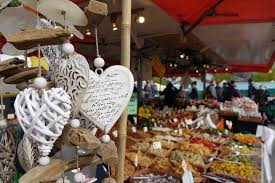

Foire Haute-Savoie Mont-Blanc
Du 30 avril au 9 mai 2022
Parc des Expositions de la Roche sur Foron
En savoir +
Du 30 avril au 9 mai 2022
Parc des Expositions de la Roche sur Foron
Le 7 décembre
Annecy
En savoir +Le dernier samedi du mois de septembre
Thônes
En savoir +En septembre
Thonon
En savoir +Tous les mardis et vendredis
de 7h00 à 13h00
Vieille ville d'Annecy
En savoir +Tous les samedis matins
de 8h00 à 13h00
Centre ville de Thônes
En savoir +Tous les samedis
de 8h00 à 13h00
Place du Mont Blanc
En savoir +Tous les mardis et vendredis
de 8h30 à 12h30
Place des Anciens combattants
En savoir +Du 22 novembre 2021 au 2 janvier 2022
Annecy
En savoir +Du 4 décembre 2021 au 2 janvier 2022
Menthon-Saint-Bernard
En savoir +